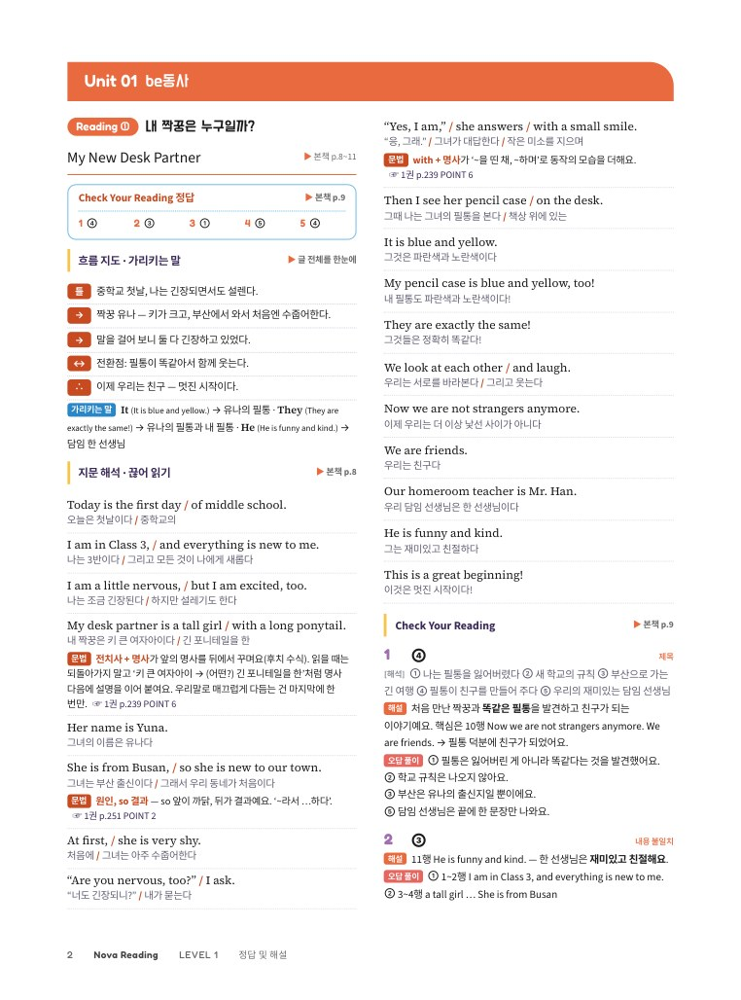
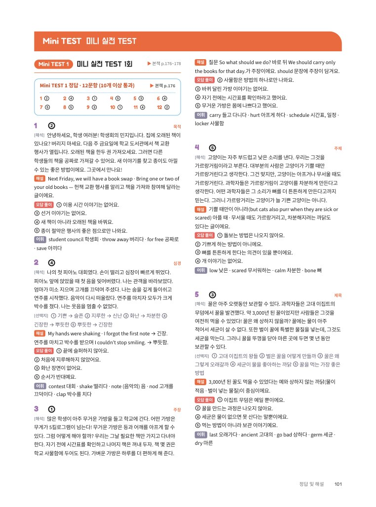

영어 독해 · 구문부터 수능 유형까지
NovaReading
LEVEL1
정답 및 해설
근거까지 짚어 주는 자세한 해설
흐름 지도 · 가리키는 말끊어 읽기 해석선택지별 풀이서술형 채점 기준
NOVA ENGLISH정답 및 해설 · 별책
틀린 이유까지
알려 주는 해설
정답만 확인하고 끝내지 마세요.
흐름 지도로 글의 구조를 보고, 끊어 읽기 해석으로
문장을 앞에서부터 다시 읽으면 같은 실수를 하지 않아요.

1흐름 지도 · 가리키는 말
단락마다 한 줄 메시지와 연결 기호로 글의 구조를, 가리키는 말이 무엇인지 먼저 보여 줘요.
2끊어 읽기 해석
모든 문장을 덩어리마다 끊어 앞에서부터 해석하고, 중요한 문법은 그 문장 바로 아래에.
3선택지별 풀이
정답의 근거 문장과 함께, 다른 선택지가 왜 틀렸는지 하나씩 알려 줘요.
4문장 표시 정답 · 채점 기준
Syntax Training 표시 정답과 서술형 · 영작의 부분 점수 기준까지 담았어요.
미리 보기

흐름 지도 지문 해설
지문 해설
Mini TEST 해설 본책 Syntax
본책 Syntax구성정답 및 해설 105쪽본책 + 워크북 + Mini TEST
Nova Reading LEVEL 1Nova Grammar LEVEL 1과 짝 · 정답 및 해설